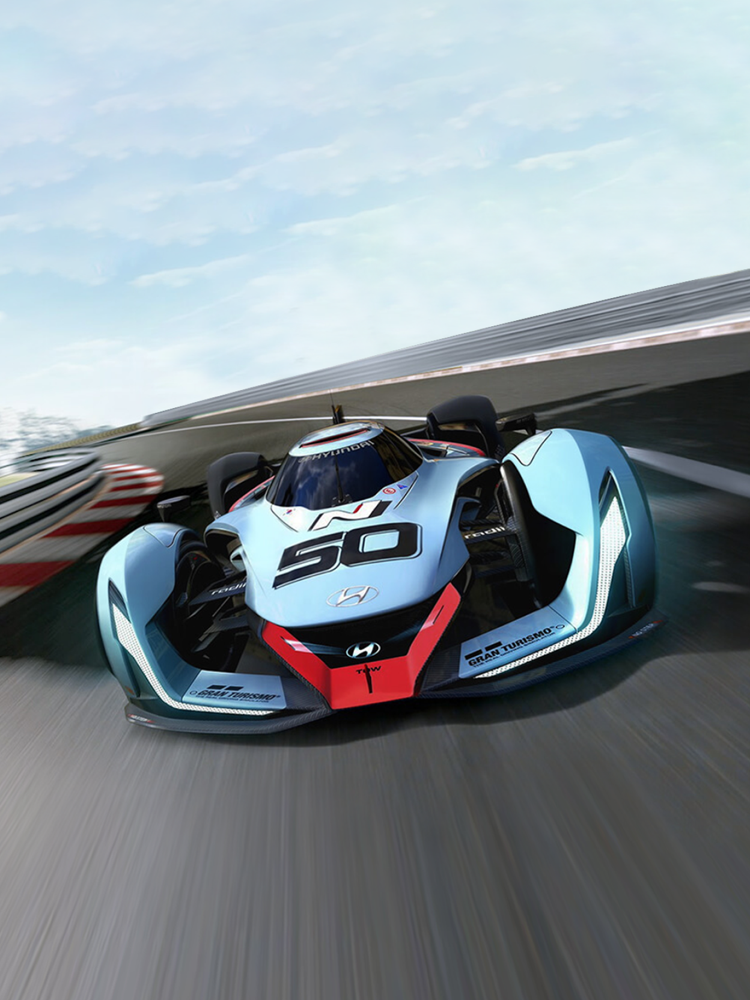
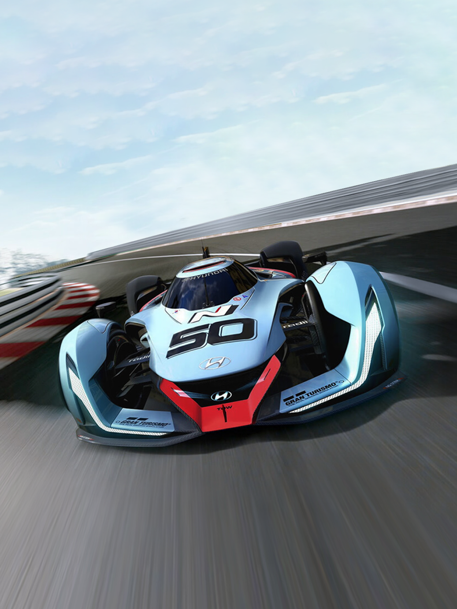

비전 GT
N의 가능성과 비전
Overview
현대 N 2025
비전 그란 투리스모
현대 N 2025 비전 그란 투리스모는 2017년 현대자동차 창립 50주년을 기념하며
'N'에 적용된 고성능 기술을 둘러싼 열정을 완벽하게 담아냈습니다.
이 흥미진진한 차량에서는 차세대 고성능 자동차에 어떤 기술이 준비되어 있는지 엿볼 수 있으며,
N 퍼포먼스가 무엇인지를 표현하는 고유한 특징을 확인할 수 있습니다.
 

Performance
고성능은 물론,
친환경까지
N 2025 파워트레인은 현대자동차가 2013년 개발한 세계 최초의 양산형 수소 연료전지를 기반으로 하며, 총 출력은 640kw(884PS)입니다. 듀얼 연료전지 스택은
500kw(680PS)의 출력을 제공하며, 슈퍼 커패시터 시스템은 회생제동 에너지를 활용해 추가로 150kw(204PS)를 생성합니다. 이 모든 동력은 친환경적이면서도 강력한
IIDC(독립형 인휠 모터 구동 제어) 시스템을 통해 전달됩니다.
유연한 CFRP 모노코크 구조와 콤팩트한 경량 연료전지 스택 덕에 차량 중량은 972kg으로 감소하여 차량 외관이 매우 슬림하게 유지됩니다. 덕분에 비전 그란 투리스모는 가장 독보적인
슈퍼카에 필적하는 중량 대비 출력비를 제공합니다. 낮은 무게 중심과 강력한 IIDC는 레이스 트랙에서도 동일한 즐거움을 느끼게 해주죠.
884psTotal System Power
960Seconds0-100 km/h
9.88km/hMax, Speed
972kgWeight

듀얼 연료 전지
작고 가벼운 듀얼 연료 전지 스택은 수소와 산소의 화학 반응을 통해 50kW(680PS)의 동력을 제공합니다.
슈퍼 커패시터
슈퍼 커패시터 시스템은 제동 및 공회전 시 재생되는 에너지를 활용해 추가로 150kW(204PS)를 생성합니다.
인휠 모터
4개의 초고속 독립형 인휠 모터가 연료 전지 시스템에서 놀라운 동력을 만들어 최적의 견인력을 제공합니다.
액체 수소 탱크
액체 수소 탱크는 탄소 섬유로 제작되어 안전성과 경량화를 동시에 실현하였습니다. 탱크는 낮은 무게 중심으로 최적의 중량 배분을 달성하기 위해 U자 형태로 설계되었습니다.
모터 제어 장치
IIDC(독립형 인휠 모터 구동 제어) 시스템은 동력 전달을 제어하며, 그 성능은 험난한 레이싱 트랙, 특히 N 차량이 잠재력을 최대한 발휘할 수 있는 시케인에서 가장 명확하게 입증됩니다.
Design
궁극의 미래 디자인
고성능 기술
N 2025 비전 그란 투리스모의 콘셉트는 항공학, 특히 로저스 드라이 레이크(구 뮤록 드라이 레이크)의 시험장에서 영감을 얻었습니다. 이 장소는 50년 넘게 조종사와 우주 비행사들이
항공학 및 항공술의 발전을 위해 목숨을 걸고 훈련해 온 곳입니다.
한때 마른 호수 바닥에 불과했던 뮤록에서 이 시험 조종사들이 발휘한 혁신적이고 대담한 정신이 N 2025 비전 그란 투리스모 디자인의 모티브이자 영감의 원천이 되었습니다.